—— 深圳 · 凌晨 03:30 ——
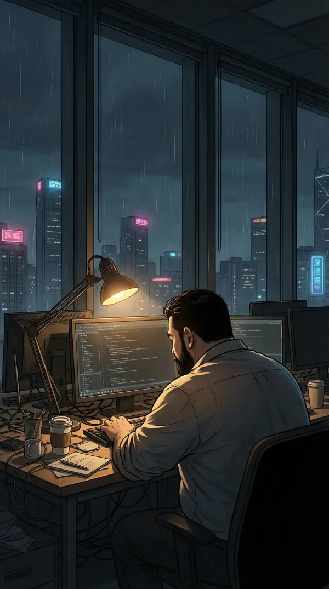
凌晨三点半。整层楼只剩我一个人。
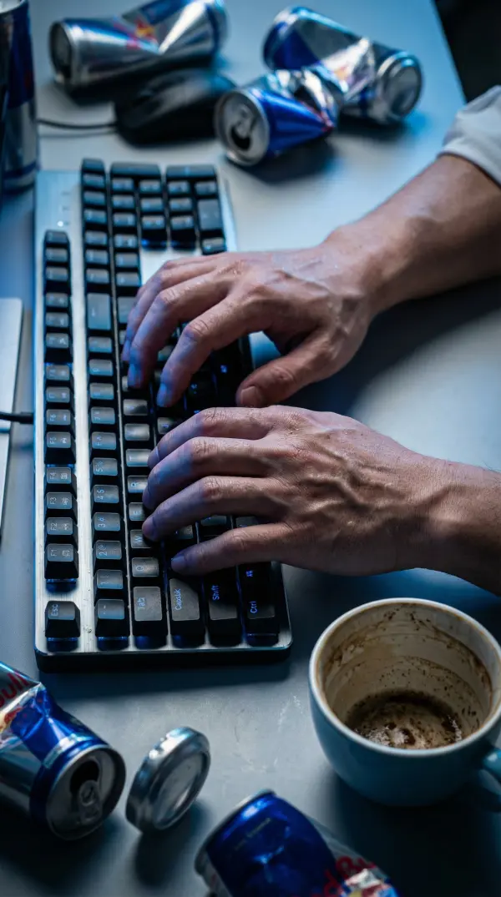
明天投资人要看demo，服务器还在抽风，我已经连续敲了十四个小时的代码。手指僵硬得像生了锈。
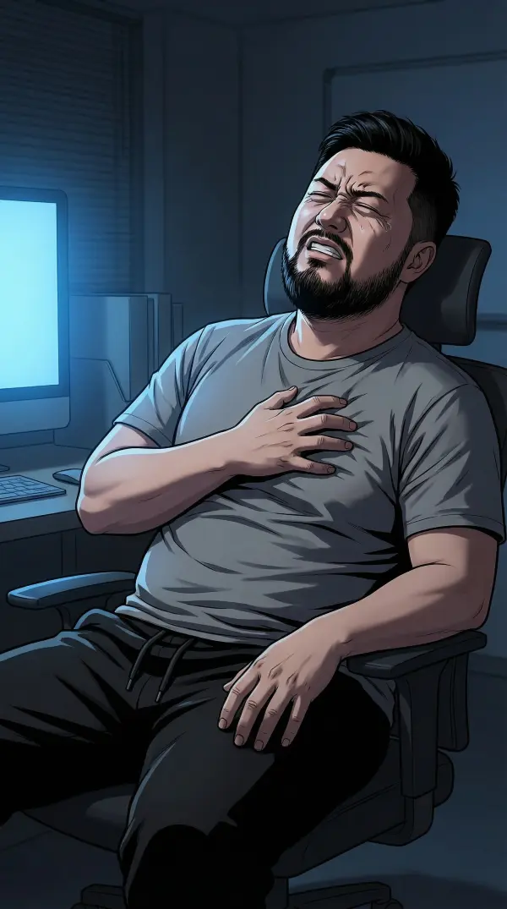
然后——胸口像被一只手攥住了。
不是比喻。是真的、物理意义上的剧痛。
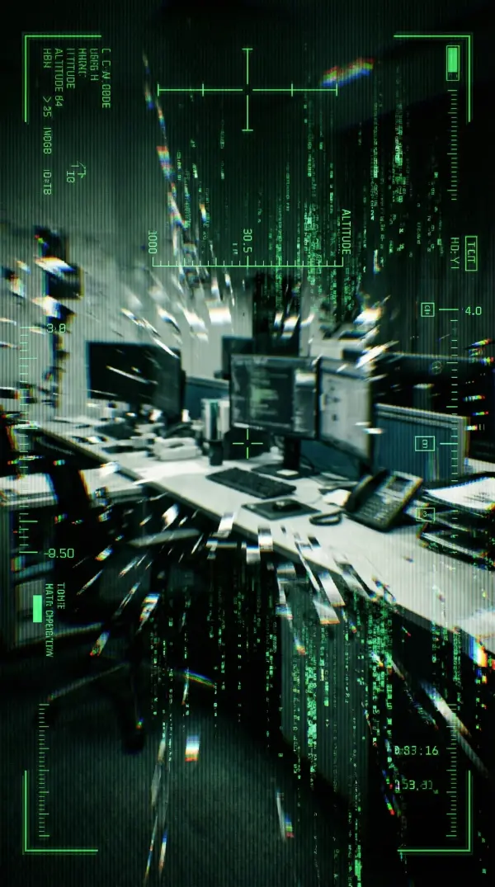
视野开始模糊。显示器上的代码变成一团光晕。我听到自己的心跳——咚……咚……间隔越来越长。
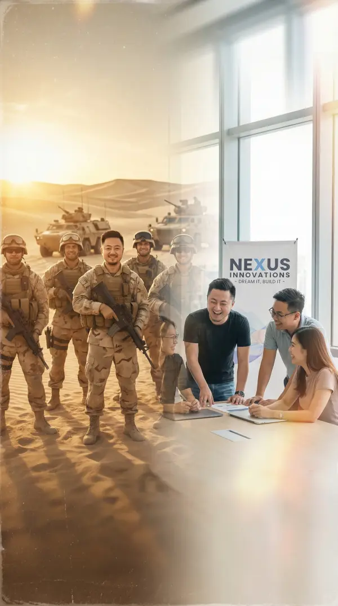
意识模糊的瞬间，脑海里闪过两个画面——
左边：退役时的合影，沙漠迷彩，暗刃小队，每个人都笑得像傻子。
右边：公司第一天，三个人挤在民房里，举着打印的logo合照。
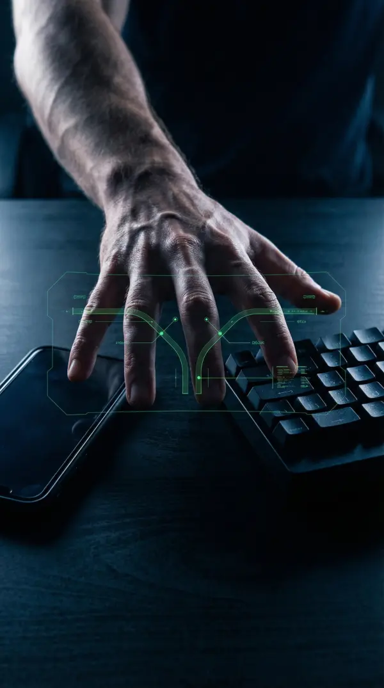
我的手在发抖。左边是手机——拨120，也许还来得及。右边是键盘——Ctrl+S，把最后的代码保存。
如果只能做一件事——
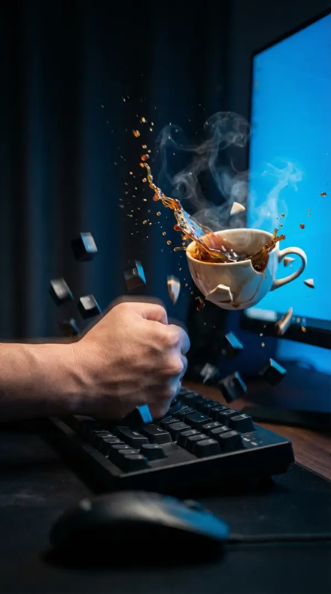
我选了键盘。
手掌拍下去的瞬间，咖啡杯被震碎了。碎片和咖啡飞溅到整个桌面。
Ctrl+S。保存成功。
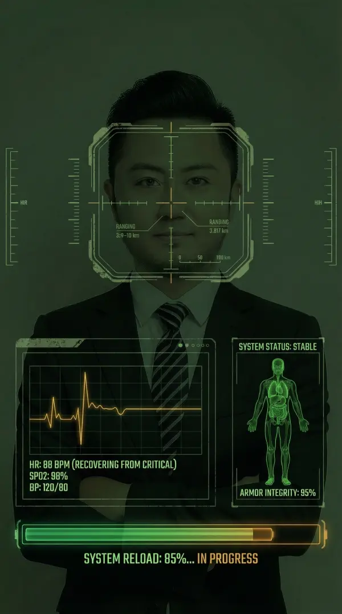
【战神系统激活中……】
宿主识别：朱江
代号：幽灵
战术等级：S
当前状态：濒死
正在执行：紧急体能唤醒……
████████████░░ 87%
—— 次日清晨 · 办公室 ——
林小夏站在我桌前，面无表情地看着满桌的咖啡渍和碎瓷片。
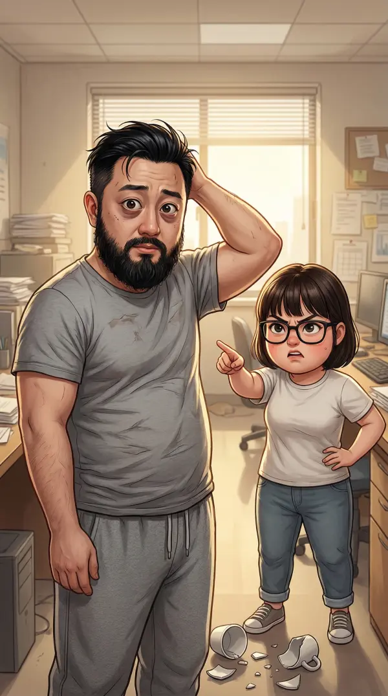
"朱总，你跟杯子有仇？"
"……战术性失误。"
"你的'战术性失误'已经报销了这个月第三个杯子了。要不我给你换不锈钢的？军用级别那种。"
我没告诉她昨晚发生了什么。也没告诉她，从今天早上开始，我的视野里多了一层……东西。
像是AR眼镜的投影，但我没戴任何设备。暗绿色的数据，漂浮在空气中。
—— 下午 14:00 · 会议室 ——
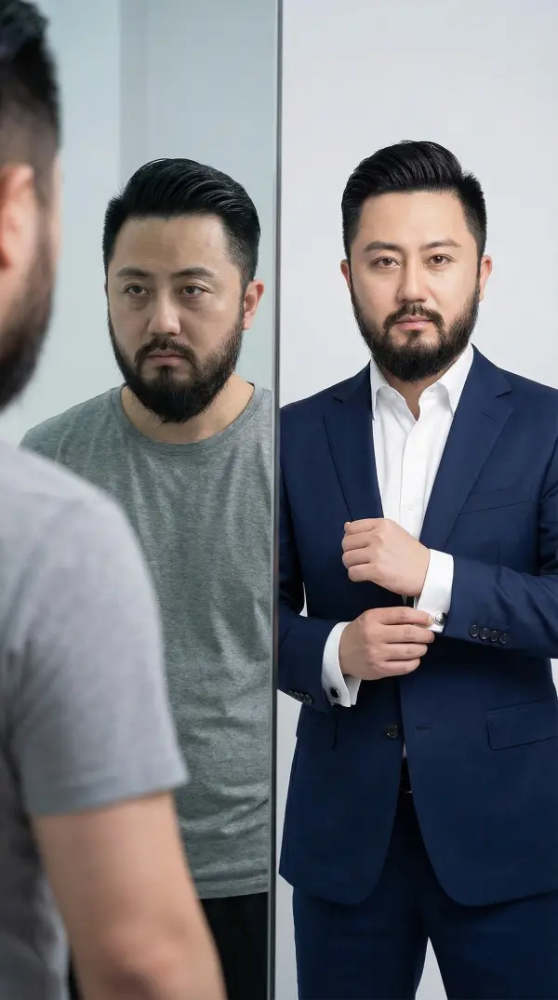
换上西装的那一刻，我在镜子里看到了两个自己——
昨晚那个濒死的程序员，和现在这个准备进战场的前特种兵。
会议室准备就绪。林小夏和老钱已经就位。投资人马上到。
我深吸一口气。老钱紧张得在擦眼镜——他一紧张就擦眼镜，大学时考试前也这样。
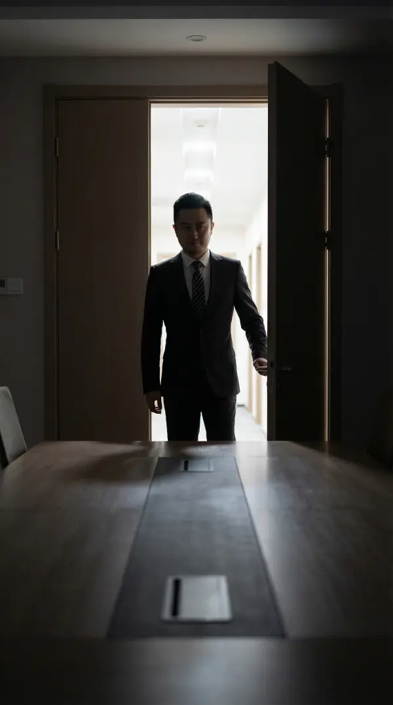
门开了。
逆光中走进来一个人影。高瘦，鹰钩鼻，三七分油头，笑得像条蛇。
我的血瞬间冷了。
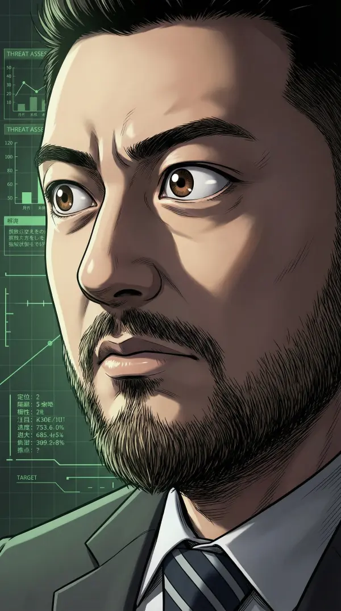
赵天成。
"暗刃"的噩梦。军情处的鬼。我以为这辈子不会再见到的人。
他居然是领投基金的LP。
"朱江，好久不见。"他坐下来，翘着二郎腿，语气像在聊天气。
"听说你在做AI？巧了，我也是。"
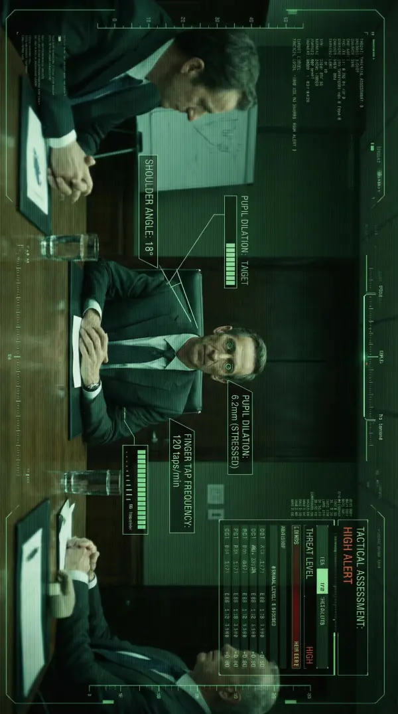
【战术分析启动】
目标：赵天成
肩膀微倾 → 防御姿态
瞳孔收缩 → 正在评估
手指敲桌频率：2.3次/秒 → 有底牌
威胁等级：极高
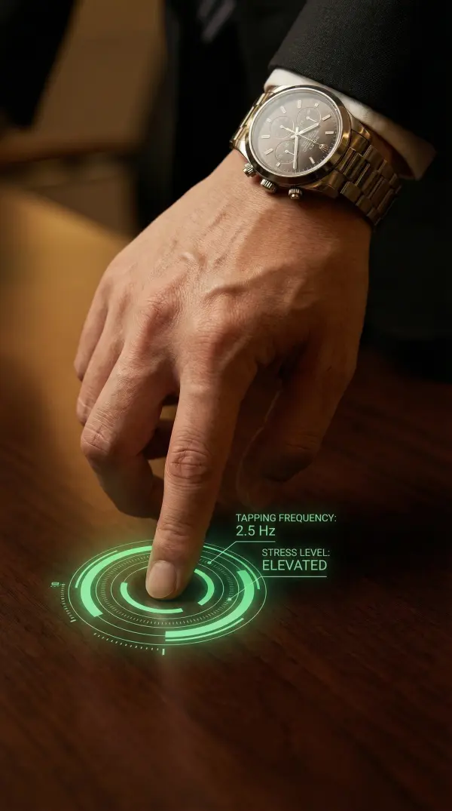
他在敲桌子。食指，中指，交替。频率很稳定。
这是他在军情处审讯时的习惯——说明他心里已经有了预判，现在在等我的反应来验证。
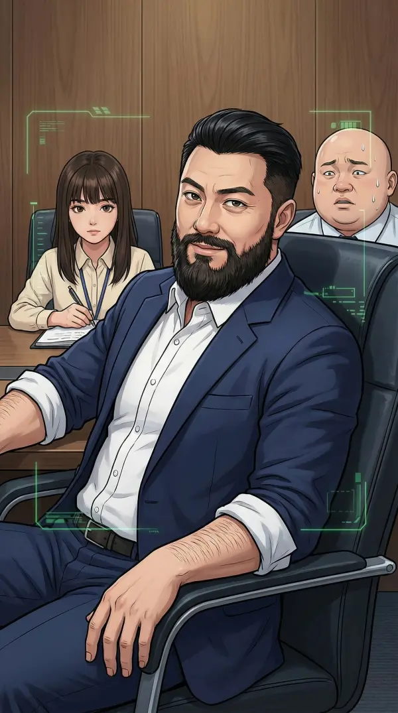
"技术共享协议？"我往椅背上靠了靠，故意露出一个懒散的笑。"赵总好大的胃口。"
林小夏在身后疯狂给我使眼色——那是"别惹投资人"的意思。
老钱已经开始擦第四遍眼镜了。
接受他的条件？短期拿到钱，但核心技术拱手让人。赵天成这个人——他要的从来不是回报，是控制。
当场拒绝？痛快，但可能得罪整个基金链。融资要黄。
第三条路……
"赵总，这个方案很有诚意。"我举起茶杯，对他笑了笑。"容我跟团队内部讨论两天，给您一个正式回复。"
拖延。收集情报。然后——反杀。
在"暗刃"我们管这叫：战术等待。
—— 会议进行中 · 突发 ——
老钱撞开会议室的门，脸色像纸一样白。
"服务器全挂了！demo数据在泄漏！"
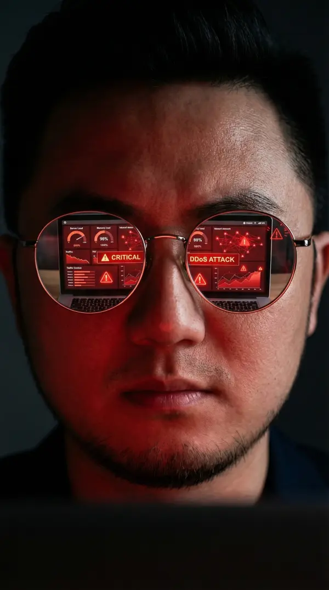
他把笔记本电脑摔在桌上——屏幕全是红色警报。DDoS攻击。流量洪峰。数据库正在被拖。
我看向赵天成。
他端起茶杯，轻轻吹了一口。表情平静得像在看天气预报。
这个表情我见过。在军情处的审讯室里。他看着别人被拆穿时，就是这个表情。
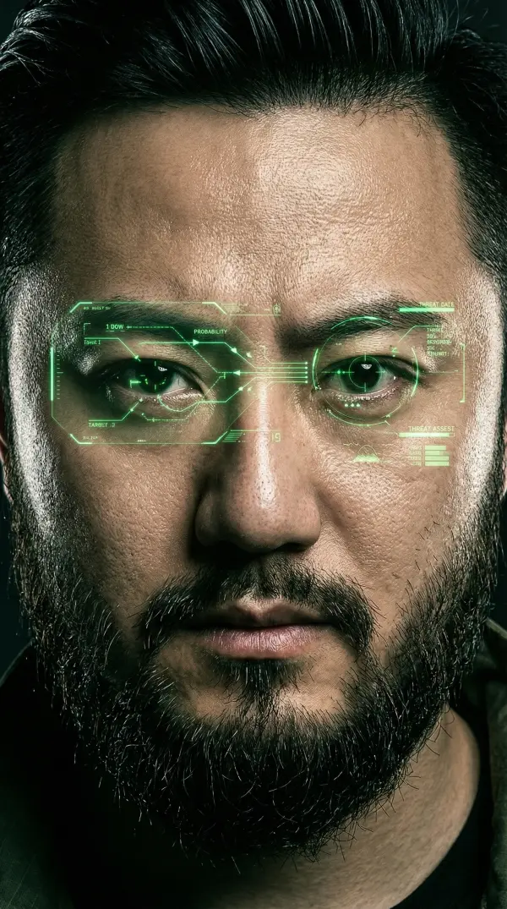
我明白了。
这不是巧合。这是他的局。先谈投资施压，再打服务器制造恐慌。逼我在最脆弱的时候签协议。
老套路了，赵天成。在战场上这叫"钳形攻击"。
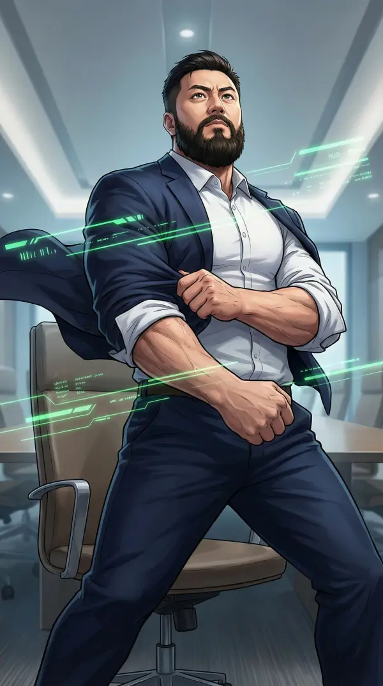
我站起来。脱掉西装外套。把袖子撸上去。
会议室里所有人都看着我。
从CEO模式，切换到作战模式。
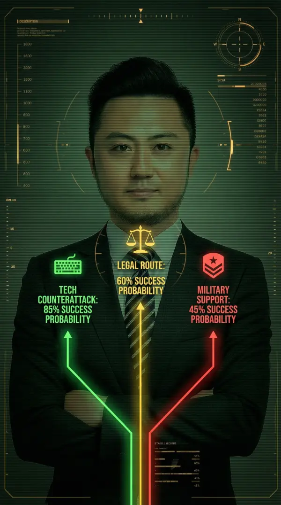
【战术路径分析】
路径A [技术反击]：老钱溯源+反制 → 成功率72%
路径B [法律路径]：报警+固定证据 → 成功率85%
路径C [军事路径]：老战友网安支援 → 成功率91%
推荐：三路并行，形成包围网
"老钱！"我的声音切换到了下达命令的频道——林小夏后来说她当时汗毛都竖起来了。
"溯源。给我找到攻击源头。你有三十分钟。"
"小夏，录屏取证，所有服务器日志备份三份。然后报警。"
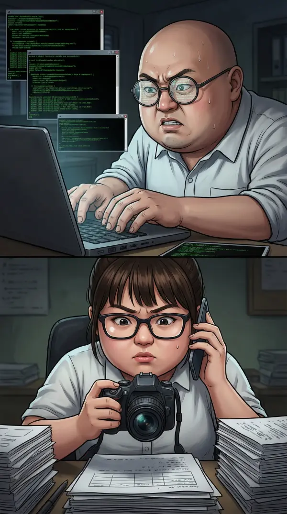
老钱和林小夏同时动了起来——一个疯狂敲键盘，一个掏出手机拍照取证。
他们没有问为什么。这一刻，办公室变成了作战指挥部。
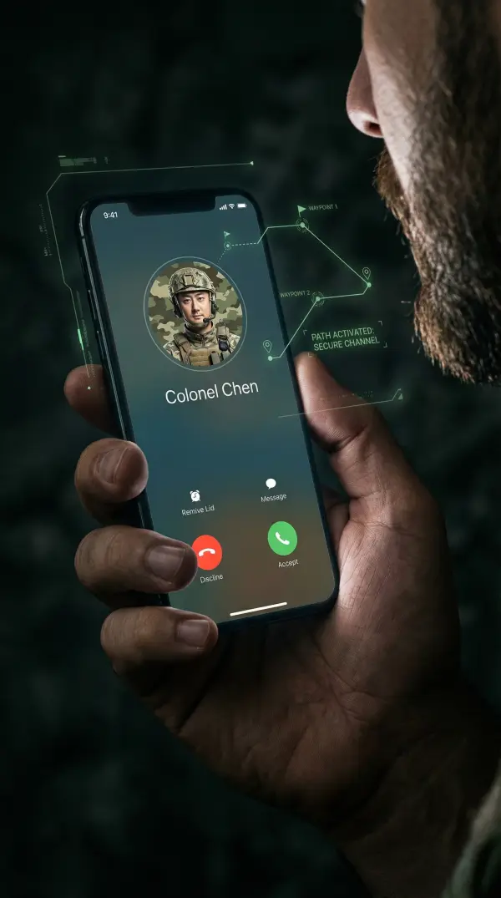
我掏出手机，翻到一个很久没拨过的号码。备注只有一个字：狼。
我的老战友。现在在网安部门。
赵天成终于放下了茶杯。
他站起来，看着我的眼神变了——不再是居高临下的审视，而是……重新评估。
"朱江，你变了。"
"不，赵天成。"我直视他。"我只是不再藏了。"
—— 当晚 22:00 · 办公室 ——
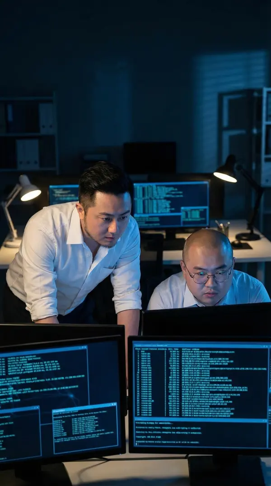
赵天成走后。所有人都走后。只剩我和老钱。
两个人对着六块屏幕，追踪攻击源头。
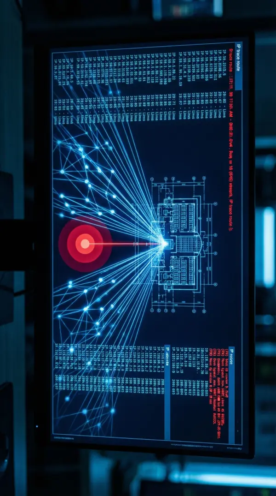
IP路由追踪完成。数据包层层剥开。源头一点一点清晰……
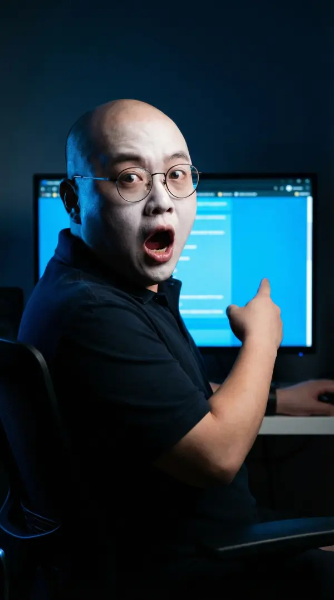
老钱转过头来看我。他的脸比下午还白。
"江哥……攻击不是从外面来的。"
"IP指向……我们自己公司的内网。"
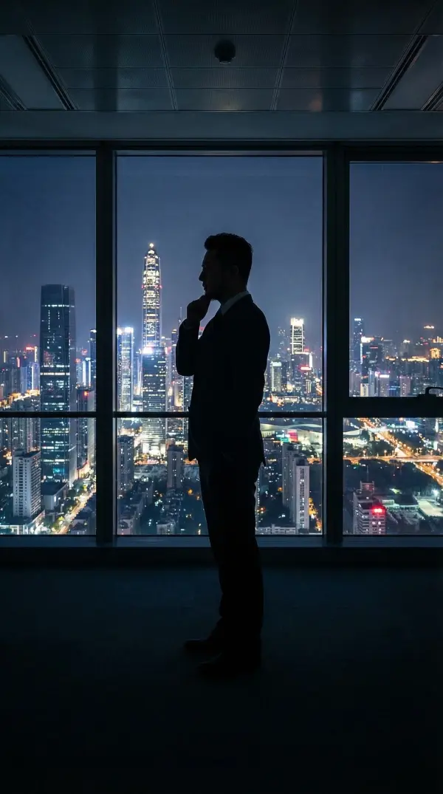
我站在窗前，看着深圳的夜景。万家灯火。每一盏灯后面都是一个正常人的正常生活。
而我——不到24小时内，差点猝死、脑子里长了个军事系统、遇到了十年前的死对头、公司被攻击、团队里还有内鬼。
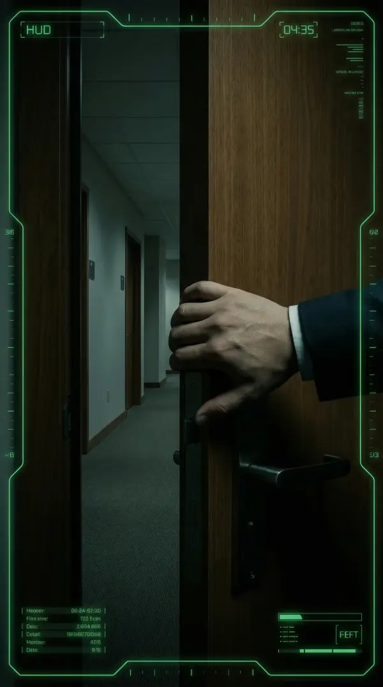
我关上办公室的门。
战术系统自动切换模式——
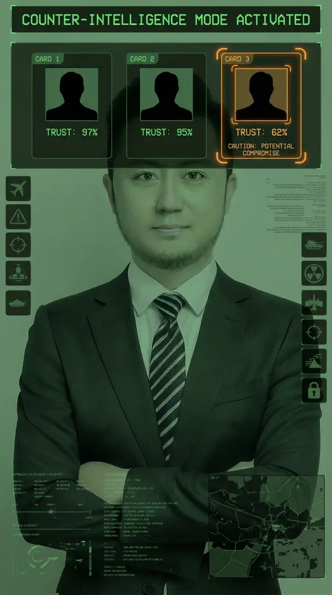
【反谍模式 ACTIVATED】
林小夏 ——— 信任指数：97% 🟢
老钱 ————— 信任指数：95% 🟢
实习生小王 — 信任指数：62% 🟡⚠️
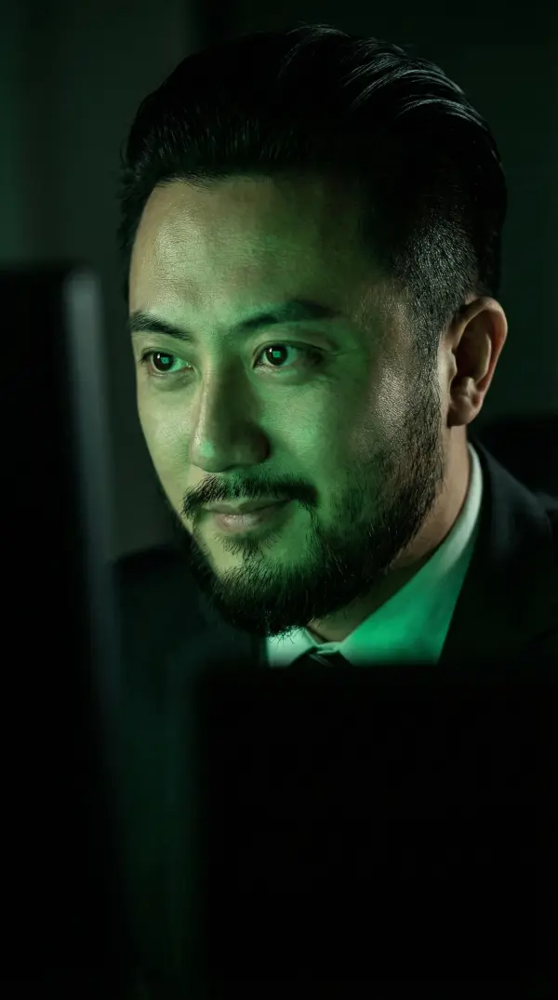
62%。
不高不低。不足以定罪，但足以警惕。
我笑了。嘴角的弧度，连我自己都觉得有点危险。
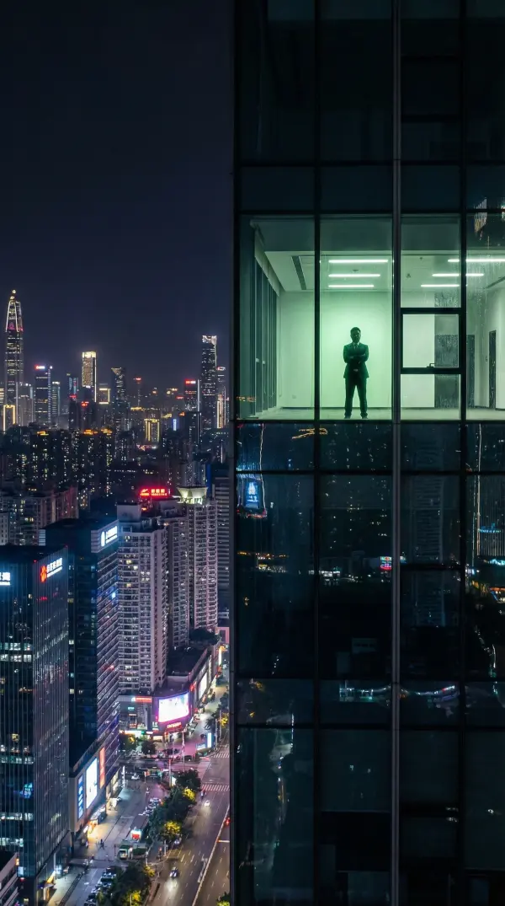
"有意思。"
战场从沙漠转移到了写字楼。
敌人从恐怖分子变成了穿西装的。
但战争的本质没变——
情报、欺骗、和比对手快一步。
赵天成，你想玩？
幽灵陪你玩到底。